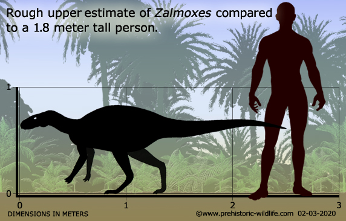
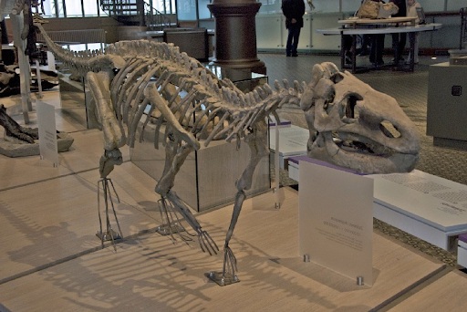

Introduction
The Zalmoxes is a Small Ornithopod dinosaur that was discovered by David Weishample, Coralia-Maria Jianu, Zoltan Csiki & David Bruce Norman in 2003. It lived in the Late Cretaceous era, about 69 million years ago. It belongs to the species of Ornithopod, a family that started out as small, two-legged dinosaurs and soon became one of the most populated species of herbivorous dinosaurs.
Habitat
Often occupying central Europe, these dinosaurs could be found in countries such as Romania, Southern France, and Northern Spain. These dinosaurs often inhabited places such as rainforests as well.
Fun Facts
Many researchers found that Zalmoxes did not have long lifespans. Another interesting fact about them is that they were often found to be 2-3 in feet, being dwarfs. Finally, they were named after an ancient European diety.
Classification
The suborder of a zalmoxes dinosaur is theropoda, while the order is dinosauria. Its subclass is considered tyrannosauroidea, with its class being ornithopods. For its phylum, its chordata and dinosauria. It belonged to the kingdom of animalia and lived during the late cretaceous era.